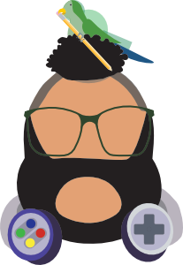

George Wyand
Digital Artist, Game Designer, Sound Engineer, Animal Scientist
Cornell University, B.S. in Animal Science
Minor in Game Design and PMA Film Studies
George is a multitalented graduate of Cornell University who was raised in Upstate New York. George studied at Cornell University and obtained an Animal Science Major
and Game Design Minor in 2019. George does animation work in 2D, Vector, Pixel Art, and 3D. In adition to his art George is passionate about Ecology and Animal Science
wich often times becomes artistic inspiration for pieces. George also has skills with coding and uses it in his projects.
George is passionate about video games and is currently working on personal indie game projects.
George has an endless thirst for knowledge and always finds ways to put more tools in is his tool kit.
Check out the Gallery!
Check out the Resume!
Education
- Bachelors of Science in Animal Science, Cornell University College of Agriculture and Life Science - 2019
- Minors in Game Design and Film Studies
- Advanced Regents Diploma, Beacon High School - 2014
Work Experience
- Cornell Productions - Team Manager - Ithaca, NY - Janurary 2016 - December 2018
- {Update} Lead a team of sound and light technicians in running various live performances, ted-talks,
Q&A panels bands. Design light queues and sound cues. Run live sound and light boards.
Coordinate with clients to provide a successful and satisfying event. Manage finances,
expenditures and equipment. Train new incoming managers and employees.
- Cornell University Housing - Performance Space Manager - Ithaca, NY - September 2015 - May 2017
- Plan several musical events and concerts for the dorm, including monthly coffee open mic night,
several small concerts and an annual music festival. Record live shows Manage weekly equipment rentals.
Maintain quality of both the equipment and the performance area. Create biannual dorm budget.
Advertise and Promotion of events. Design Promotional Posters.
Links
Artistic Talents
- Digital Illustrations
- Character Designs
- 3D Renders
- Pixel Art
- Sound Design
- Game Design
Coding Languges
- Python
- HTML
- CSS
- JAVASCRIPT
- C#
- C++
- LUA
- GD Script
Creative Software Proffeciencies
- Adobe Photoshop
- Adobe Illustrator
- Adobe After Effects
- Adobe InDesign
- Figma
- Final Cut Pro X
- Ableton Live
- Protools
- Clip Studio Pro
- Blender
- Unity
- Godot
- Affinity Photo
- Affinity Designer
- Affinity Publisher
- OBS